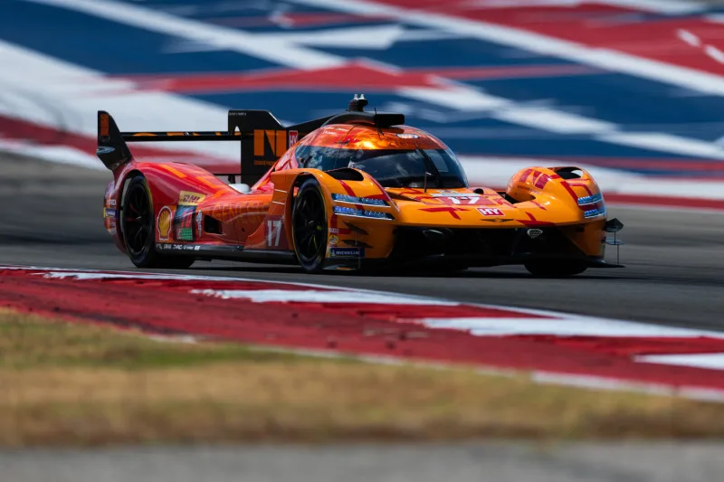
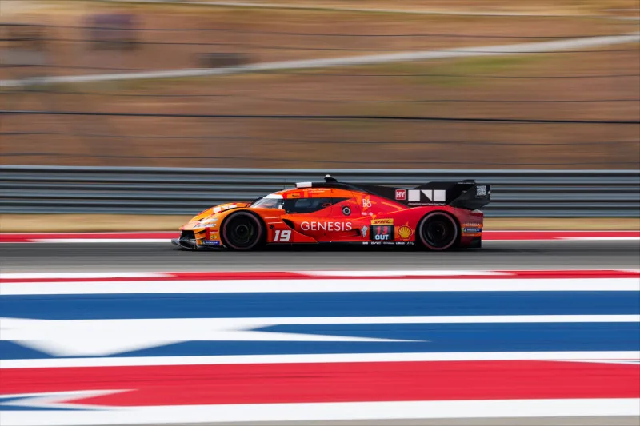
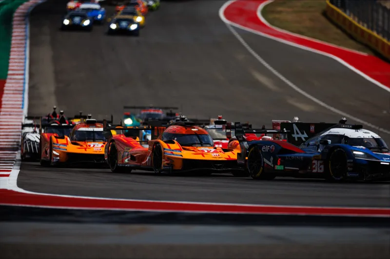

▲ 텍사스 주기 아래를 달리는 제네시스 GMR-001. 17번 차량은 론스타 르망에서 7위로 결승선을 통과했다
1. 론스타 르망, 텍사스에서 열린 FIA WEC 5라운드
제네시스 마그마 레이싱이 2026년 9월 6일(현지시간) 미국 텍사스 오스틴의 서킷 오브 디 아메리카스(COTA)에서 열린 FIA 월드 인듀어런스 챔피언십(WEC) 5라운드 '론스타 르망(Lone Star Le Mans)'에 출전했다. 6시간 동안 진행된 이번 경기에서 GMR-001 하이퍼카 17번 차량이 7위로 결승선을 통과하며 포인트를 획득, 팀의 WEC 출전 이후 최고 성적을 새로 썼다. 앞서 지난달 같은 COTA에서 열렸던 미국 무대 데뷔전이 팀의 첫걸음이었다면, 이번 론스타 르망은 그 데뷔 이후 처음으로 톱10 안에 들며 실제 경쟁력을 입증한 무대라는 점에서 의미가 다르다.

▲ 코너를 공략하는 17번 GMR-001. 이 차량이 이번 대회에서 팀 최고 성적인 7위를 기록했다 ⓒ Genesis
2. 17번 7위, 19번 15위... 두 대 모두 선두와 동일 랩 완주
이날 경기에서 안드레 로터러, 피포 데라니, 마티스 조베르가 나눠 몬 17번 차량은 7위(선두와 35.975초 차)로 결승선을 통과했다. 폴로프 샤탱, 마티외 자미네, 다니 준카델라가 탑승한 19번 차량은 15위(선두와 1분45.214초 차)로 레이스를 마쳤다. 두 차량 모두 경기 중 기계적 문제 없이 선두 그룹과 동일한 랩 수로 완주했다는 점에서, 극한의 고온·거친 노면 조건 속에서도 안정적인 내구성을 보여줬다는 평가가 나온다.
| 차량 | 드라이버 | 순위 | 선두와 격차 |
|---|---|---|---|
| #17 GMR-001 | 안드레 로터러 · 피포 데라니 · 마티스 조베르 | 7위 | +35.975초 |
| #19 GMR-001 | 폴로프 샤탱 · 마티외 자미네 · 다니 준카델라 | 15위 | +1:45.214 |
📍 론스타 르망과 COTA, 왜 '르망'인가
'론스타 르망'이라는 명칭은 텍사스의 별칭인 '론스타 스테이트(Lone Star State)'와 내구레이스의 대명사인 '르망'을 결합한 것으로, FIA WEC 캘린더 안에서 열리는 정규 라운드 중 하나다. 프랑스 르망 24시간 레이스와는 별개 대회이며, 개최지인 COTA는 고속 코너와 강한 제동 구간, 거친 노면이 뒤섞인 고난도 서킷으로 꼽힌다.
3. 데뷔전을 넘어선 실전 결과
제네시스 마그마 레이싱은 지난달 같은 COTA에서 미국 무대 데뷔전을 치른 바 있다. 당시는 새로운 홈 서킷에 적응하는 과정에 가까웠다면, 이번 론스타 르망은 실제 대회 성적으로 팀의 성장을 증명한 무대였다. 팀은 경기를 앞두고 “극한의 조건에서도 신뢰성을 재현하고, 두 대의 경주차 모두 선두와 동일 랩으로 완주하며 포인트를 획득하는 것”을 목표로 내걸었는데, 실제 결과가 이 목표에 그대로 부합했다.

▲ 19번 GMR-001의 고속 주행 모습. 이 차량은 15위로 완주하며 선두와 동일 랩을 유지했다 ⓒ Genesis
4. 드라이버들이 전한 소감
7위를 기록한 17번 차량의 드라이버 안드레 로터러는 경기 후 “더 많은 포인트를 얻었고, 올 시즌 우리의 최고 성적”이라고 소감을 전했다. 마티스 조베르는 “포인트를 노릴 만한 페이스가 있었고, 이 순위는 우리가 받을 자격이 있다고 생각한다”고 말했다. 피포 데라니 역시 “이번 결과를 받아들이겠다. P7으로 마무리하며 우리의 최고 성적을 가져간다”고 밝혔다. 세 드라이버 모두 이번 성과를 시즌 중 가장 만족스러운 결과로 꼽았다.

▲ 다른 경쟁 차량들과 접전을 벌이는 GMR-001 두 대. 경기 중 접촉 사고를 딛고도 순위를 지켜낸 구간이 여럿 있었다 ⓒ Genesis
5. 2027년 IMSA 진출을 위한 예열
업계에서는 이번 론스타 르망 결과를 두고 제네시스 마그마 레이싱이 2027년 미국 IMSA 스포츠카 챔피언십 진출을 앞두고 실전 데이터를 쌓아가는 예열 과정으로 해석하고 있다. 실제로 팀은 이번 경기를 앞두고 미국 국적의 수석 엔지니어가 자신의 홈 서킷인 COTA로 복귀해 경기를 준비했다고 밝힌 바 있다. WEC 데뷔 이후 꾸준히 순위를 끌어올려온 만큼, 다음 라운드에서도 이번 톱10 성적을 이어갈 수 있을지 관심이 모인다. 관련 소식은 제네시스 뉴스룸에서 확인 가능하다. 바로가기
✅ 제네시스 마그마 레이싱 론스타 르망, 이것만은 확인하세요
· 9월 6일(현지시간) 텍사스 COTA에서 열린 FIA WEC 5라운드 '론스타 르망' 결과
· GMR-001 #17 차량 7위(+35.975초)로 팀 WEC 출전 이후 최고 성적
· #19 차량은 15위(+1:45.214), 두 차량 모두 선두와 동일 랩 완주
· 지난달 COTA 데뷔전에 이은 실전 결과로, 톱10 진입은 이번이 처음
· 2027년 IMSA 진출을 앞둔 실전 데이터 축적 과정으로 해석
6. 정리
제네시스 마그마 레이싱이 론스타 르망에서 거둔 7위는 단순한 참가 이상의 의미를 지닌다. 지난달 COTA 데뷔전이 홈 서킷 적응의 성격이 강했다면, 이번 경기는 극한의 텍사스 더위와 거친 노면 속에서도 두 대 모두 선두와 동일 랩으로 완주하며 실전 경쟁력을 증명한 무대였다. 팀이 목표로 내걸었던 신뢰성과 포인트 획득을 동시에 달성한 만큼, 2027년 IMSA 진출을 앞두고 순조로운 예열을 마쳤다는 평가가 나온다.